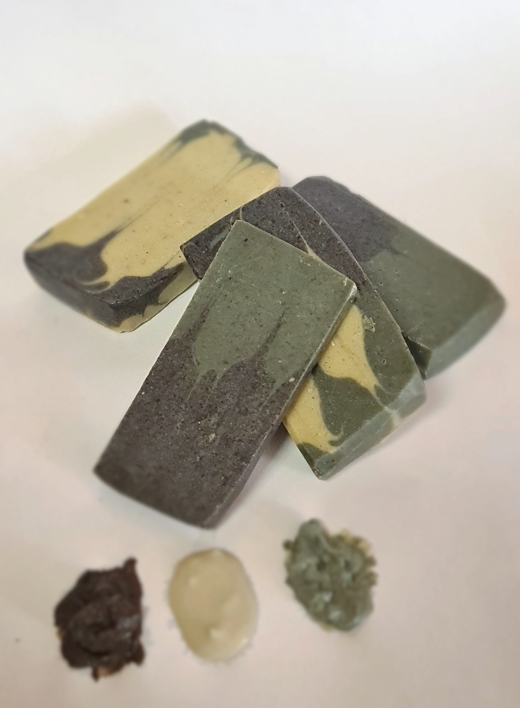

Мыло ручной работы из натуральных масел, эфирных масел и даров природы. Создано с любовью для вашей кожи в Москве.
Перейти в каталогТолько натуральные масла, эфирные масла и природные добавки. Без парабенов и силиконов.
Каждое мыло создается вручную в небольшом ателье в Москве. Мы вкладываем душу в каждый кусочек.
Гипоаллергенные рецепты, протестированные на чувствительной коже. Безопасно для детей от 3 лет.
Соблюдаем все технологические нормы мыловарения. Срок созревания каждого мыла — минимум 4 недели.
AnnaSun — это маленькое ателье натурального мыловарения в центре Москвы. Мы начали с увлечения в 2020 году и быстро полюбили это ремесло. Сегодня мы создаём мыло ручной работы из натуральных масел и эфирных масел.
Каждое мыло проходит минимум 4 недели созревания, чтобы стать мягким, безопасным и полезным для вашей кожи. Мы используем только проверенные рецепты и натуральные добавки.
Узнать больше